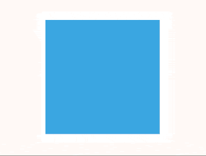

Animation
So far we’ve discussed why we animate, found some sources of inspiration, looked at tools and sites we might find useful for development, and learned what transitions are.
Now, I'll introduce the animation property.
Animations in the Browser
Transitions and animations are similar. Both take the form of a CSS property, and have duration, delay and other ways of controlling how the browser creates the movement.
While transitions are all about smoothing the change from state A to state B, animations are a way to describe multiple steps.
Transitions: A to B

Animations: A to B to C
Animations are useful for more complex movement in the browser. In the above example, there are 3 states (A, B and C). A transition would only go from A to C while an animation allows us to specify what step B looks like and make sure the animation follows all three steps.
Animations also behave a little differently. They can begin automatically. While a transition might require adding a class or a change of state such as hovering, animations can start when the page loads.
This means that if telling a story or drawing attention to something on a page, animations can be a good choice.
Examples
The “Save” button movement we see on Codepen is a good example of a practical animation.

It does a great job helping people notice the button.
The effect is made up of a series of keyframes that tell the browser to shake the button from left to right. We’ll dig more into keyframes in greater depth in the next class period.
Another example is the landing page for Fabric, an app building platform from Twitter. CSS Animation is used nicely here to help communicate the modular aspect of Fabric, and establish credibility at the same time:
Lastly, an example from a conference teaser site. This is a CSS Mac Plus, created to show off the welcome message on theWeb.is teaser site.
Transitions vs. Animations
Transitions are when the browser animates from one state to another (A to B). They’re usually triggered by an action such hovering over an element, or adding or removing a class using JavaScript.
Animations are more involved, and let you create sequences of animations with as many keyframes as you need along the way. They trigger automatically, and can loop.
Homework
Can you think of ways animations might be used on your web pages? Keep an eye open for animation when browsing. Look out for when something moves in a way that calls attention to itself. In these cases it’s usually an animation.